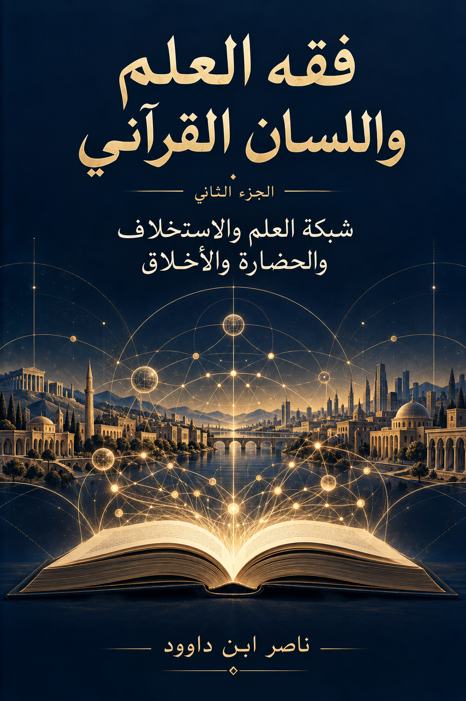

119. فقه العلم واللسان القرآني — الجزء الثاني: شبكة العلم والاستخلاف والحضارة والأخلاق

دراسة في بناء شبكة العلم وصلاتها بالاستخلاف والحضارة والأخلاق، تتناول الرزق المعرفي والذكاء الاصطناعي وحوكمة المعرفة وميثاقًا مقترحًا لشبكة العلم، مع التمييز بين الشواهد القرآنية والمقترحات التفسيرية والتطبيقات الافتراضية. النسخة الإنجليزية تكييف مفاهيمي مختصر.
النسخة الإنجليزية تكييف مفاهيمي مختصر، وليست ترجمة حرفية؛ يبقى النص العربي المرجع الأساسي للتحليل التفصيلي والإحالات.
قراءة PDF داخل الموقع / Read the PDF on this website
جارٍ تجهيز القارئ… / Preparing the reader…
ملخص الكتاب وفهرسه الموضوعي (مقتطف نصي للفهرسة والبحث)
فقه العلم واللسان القرآني
الجزء الثاني
شبكة العلم والاستخلاف والحضارة والأخلاق
تأليف ناصر ابن داوود
2026
1 المقدمة
بسم الله الرحمن الرحيم
الحمد لله الذي علّم الإنسان ما لم يعلم، وجعل له في الآفاق والأنفس مجالاً للنظر، وفي الأمانة والعدل ميزاناً للعمل. والصلاة والسلام على خاتم المرسلين، وعلى آله وصحبه أجمعين.
بحثنا في الجزء الأول فقه العلم وبناء الوعي المعرفي، وعلاقة قراءة الكتاب المسطور بقراءة الكتاب المنشور، وأثر البصيرة في تحرير الإنسان من التبعية. وننتقل هنا إلى سؤال البناء: كيف تصبح المعرفة قدرة مشتركة على خدمة الإنسان وعمارة الأرض؟ وكيف تنتظم جهود الباحثين والمعلمين والخبراء والمؤسسات في شبكة تحمل العلم وتراجعه وتحوّله إلى أثر؟
إن امتلاك المعلومات لا يكفي لقيام حضارة. فقد تتكدس الكتب، وتتسع قواعد البيانات، وتكثر الشهادات، بينما يبقى المجتمع عاجزاً عن تشخيص مشكلاته أو إصلاح مرافقه. موضع الخلل في هذه الحال قد يكون في صلات المعرفة: بين السؤال والدليل، وبين الجامعة والعمل، وبين الخبير وصاحب الحاجة، وبين القدرة والغاية. ومن هنا يأتي مفهوم شبكة العلم ليدرس هذه الصلات، ويكشف كيف يمكن إصلاحها.
نقصد بشبكة العلم البنية التي تصل مصادر المعرفة بأدوات النظر والتحقق، وتصل التخصصات بأصحابها، وتصل النتائج بالتطبيق، ثم تعيد أثر التطبيق إلى الباحثين ليتعلموا منه. يدخل فيها الإنسان والكتاب والمختبر والمعلّم والمؤسسة والأداة الرقمية، غير أن تماسكها يتوقف على صدق النقل وحرية السؤال وعدالة المشاركة وإمكان التصحيح. فالعلم الذي لا يجد طريقاً إلى الناس يضعف أثره، والمعرفة التي تتحرك دون مراجعة قد تنشر الخطأ بسرعة تفوق قدرة المجتمع على إصلاحه.
وتنتظم معالجة هذا الجزء حول أربع علاقات. العلم يبني القدرة على الفهم والعمل؛ والاستخلاف يضع هذه القدرة في أفق الأمانة؛ والحضارة تمنحها صورة تاريخية ومؤسسية؛ والأخلاق تضبط الوجهة والوسيلة والأثر. هذه العلاقات هي مجال النظر الذي نقترحه، ونختبره بالشواهد القرآنية، وبالواقع، وبما يكشفه نقد القارئ.
وتدخل أطروحة بدر التاريخ في فيديو «هل سبق القرآن الذكاء الاصطناعي؟ رحلة المعرفة من القلم إلى الخوارزمية» بوصفها مادة بحثية محاورة. نعرض أفكارها، ونستثمر قراءتها الوظيفية للآيات، ونضيف إليها مفهوم الرزق المعرفي وشبكة العلم. ونضع بين يدي القارئ مواضع الاستدلال والأسئلة المفتوحة، ليحكم ويكمل مسار البحث. أما المعلومات التقنية فتُراجع في مصادرها المتخصصة، حتى يكون اتصال النص بالواقع مبنياً على معرفة واضحة بالطرفين. [م1، ت1]
2 خريطة الجزء الثاني
الباب الأول في تكوّن المعرفة وأدواتها ورزقها المعرفي ويضم الفصول الأول والثاني والثالث.
الباب الثاني في العلم وأمانة الاستخلاف وميزان الحضارة ويضم الفصول الرابع والخامس والسادس.
الباب الثالث في بناء شبكة العلم وتوظيف الذكاء الاصطناعي وتطبيقاته العمرانية ويضم الفصول السابع والثامن والتاسع.
الباب الرابع في أخلاق المعرفة وحوكمتها وبرنامج العمل الحضاري ويضم الفصول العاشر والحادي عشر والثاني عشر.
وتختم الرحلة بأسئلة بحثية مفتوحة، وميثاق مقترح لشبكة العلم، ومسرد للمفاهيم، وإحالات إلى المواد التي يقوم عليها الحوار.
3 فهرس الجزء الثاني
1 المقدمة 3
2 خريطة الجزء الثاني 4
3 فهرس الجزء الثاني 5
4 الباب الأول: تكوّن المعرفة وأدوات البحث والرزق المعرفي 8
4.1 الفصل الأول: كيف تتكوّن المعرفة 8
4.2 الفصل الثاني: من القلم إلى الخوارزمية 11
4.3 الفصل الثالث: الرزق المعرفي والارتقاء في أدوات البحث 14
5 الباب الثاني: العلم وأمانة الاستخلاف وميزان الحضارة 17
5.1 الفصل الرابع: العلم في بناء الإنسان المستخلف 17
5.2 الفصل الخامس: الحكمة والميزان في توجيه القدرة 19
5.3 الفصل السادس: السنن والتسخير والعمران الراشد 21
6 الباب الثالث: بناء شبكة العلم والذكاء الاصطناعي وتطبيقاته العمرانية 24
6.1 الفصل السابع: معمارية شبكة العلم 24
6.2 الفصل الثامن: الذكاء الاصطناعي داخل شبكة العلم 27
6.3 الفصل التاسع: نماذج لتحويل المعرفة إلى عمران 29
7 الباب الرابع: أخلاق المعرفة وحوكمتها وبرنامج العمل الحضاري 31
7.1 الفصل العاشر: الأخلاق في جميع مراحل العلم 31
7.2 الفصل الحادي عشر: حوكمة المعرفة وتصحيح مسارها 33
7.3 الفصل الثاني عشر 36